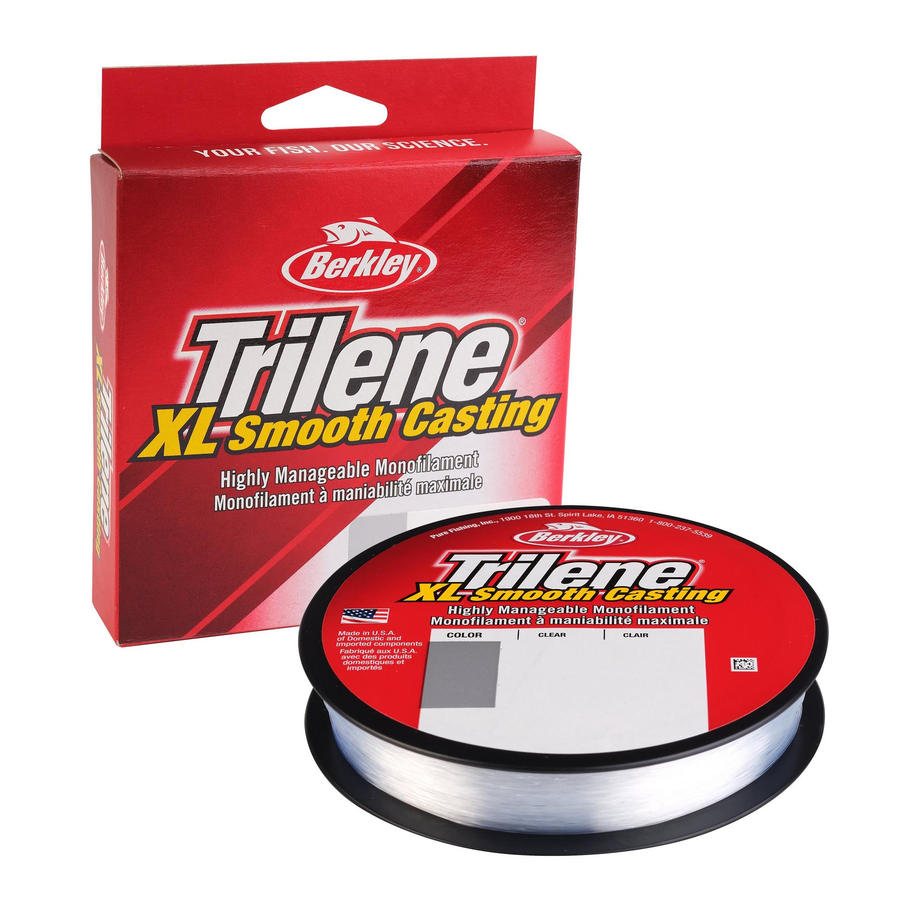

Berkley Trilene XL Monofilament
Diameter chart, reel capacity & backing guide

Berkley's smooth-casting nylon monofilament, available in a wide range of strengths. This guide covers Trilene XL, not Trilene XT, Big Game, or Trilene fluorocarbon. The chart uses the current U.S. filler and bulk lineup, with package length matched to each strength.
- Construction
- Nylon monofilament
- Listed strengths
- 2-30 lb
- Line type
- Monofilament main line
Is Trilene XL right for your setup?
Trilene XL is a straightforward choice to consider for a full mono main line, especially when uncomplicated spooling and handling matter. It does not need an anti-slip mono base like braid on a smooth arbor. Mono's stretch changes the feel compared with braid, and thicker sizes can become less manageable on compact spinning spools. Match the strength to your rod, lure, and cover; use the calculator to check the space it will occupy.
How much Trilene XL will fit?
Calculated estimates, not measured fills. Stop at the reel manufacturer's fill level even if some line remains.
Berkley Trilene XL diameter chart
Current U.S. Trilene XL filler and bulk spool specifications. Smaller pony packages are not included in this chart. Do not substitute Trilene XT or Big Game diameters.
| Strength | Inches | mm | Spools (yd) |
|---|---|---|---|
| 0.005 | 0.120 | 330, 3000 | |
| 0.008 | 0.200 | 330, 1000, 3000 | |
| 0.009 | 0.220 | 330, 1000, 3000 | |
| 0.010 | 0.250 | 330, 1000, 3000 | |
| 0.011 | 0.270 | 300, 1000, 3000 | |
| 0.013 | 0.330 | 300, 1000, 3000 | |
| 0.014 | 0.350 | 300, 1000, 3000 | |
| 0.015 | 0.380 | 300, 1000, 3000 | |
| 0.016 | 0.400 | 270, 1000, 3000 | |
| 0.018 | 0.450 | 270, 2600 | |
| 0.020 | 0.500 | 250, 2300 |
Choosing a Trilene XL strength
For light tackle, the 2-6 lb options deserve attention only when the rod, drag setting, cover, and target fish suit light line. The 2 lb version is not simply a way to squeeze more yards onto any reel.
The 8-12 lb options are a useful comparison range for everyday mono setups, but there is no single best strength for every spinning reel or baitcaster. The 14-17 lb sizes add diameter as well as rated strength; consider how they handle on your particular spool.
The 20-30 lb sizes need a reel and rod suited to thicker mono. More strength does not compensate for an unsuitable lure, drag setting, or spool. A printed 10 lb capacity entry describes spool capacity, not a requirement to use 10 lb Trilene XL.
This is a specification-based setup guide, not a ReelCalc casting-distance or strength test of Trilene XL.
Want a guided recommendation?
Continue in the Setup WizardSame pound test, different diameters
At your selected strength
Loading diameter comparisons...
What changes with another line?
Nearby diameters in the line database
| Line | Strength | Inches | Difference |
|---|---|---|---|
| Loading line database... | |||
Backing, working line & leaders
Start with a full mono fill
A single Trilene XL main line is usually the simplest plan: no backing connection is needed just to grip the arbor. Capacity-only mode estimates that full fill. Stop at the recommended lip clearance rather than forcing the final yards onto the spool.
Backing is an option, not a requirement
A shorter working section can sit over existing sound backing, but adding another mono solely to fill space is not always worthwhile. If you use backing, keep enough fresh XL above the knot for your longest cast, fish runs, and line lost to retying.
Check the package length
The filler spool is not 330 yards at every strength. The verified range runs from 330 yards in 2-8 lb down to 250 yards in 30 lb. One package can cover multiple fills on a small reel or fall short on a deep spool. Compare the selected package with the calculated fill before buying.
How Much Fits on These Reels?
Estimated full-spool capacity for the Trilene XL strength selected above, with no backing. These are calculated examples, not physical tests or recommendations for every pairing.
Loading capacity estimates...
Trilene XL questions, answered
How much Trilene XL will my reel hold?
Select the strength and your exact reel, or enter one matching mono capacity rating from the reel. ReelCalc uses the selected XL diameter to estimate a full fill. A reel's pound-test label alone does not identify the diameter of every brand's line.
Is Trilene XL suitable for spinning reels?
Berkley positions XL around smooth casting and manageable handling. Choose a strength appropriate for the rod and spool size; thicker mono can be more difficult to control on a compact spinning reel even if it fits by volume.
Can I use Trilene XL on a baitcaster?
Yes, provided the strength and diameter suit the reel, rod, lure, and cover. Follow the reel's fill guidance and adjust the casting controls for the actual lure. Switching line does not eliminate the need to control spool speed.
Does Trilene XL need backing?
No, a full mono main line does not need a separate anti-slip backing layer. Backing can still be used under a shorter working section, but it adds a connection. Capacity-only mode is the starting point when filling the reel entirely with XL.
Is a Trilene XL filler spool always 330 yards?
No. The verified U.S. filler spools contain 330 yards at 2-8 lb, 300 yards at 10-17 lb, 270 yards at 20-25 lb, and 250 yards at 30 lb. Pony and bulk packages have different lengths; check the exact package you are buying.
Are Trilene XL, XT, and Big Game the same line?
No. They are separate Berkley product families. Do not copy an XL diameter into a setup using XT or Big Game merely because the pound-test labels match. Select the exact line in the database to compare its capacity.
Can mono backing and a mono leader be treated as the same thing?
No. Backing fills space underneath the working line. A leader is attached at the lure end. This calculator plans the line wound on the reel; a short leader is a separate fishing choice.
Specifications & sources
Rechecked September 12, 2026. Filler and bulk strengths and yardages come from Berkley's U.S. product variants. The 6-30 lb diameters match Berkley Australia's table for the same manufacturer SKUs; 2 and 4 lb diameters were cross-checked in retailer specifications. These are published values, not ReelCalc measurements. Retail stock and color availability vary.
Calculations use the catalog's listed inch diameters. Published inch and millimeter values may differ slightly because of rounding.
- Berkley U.S. Trilene XL filler spools Product identity, current filler-spool strengths and yardages, and manufacturer positioning.
- Berkley U.S. Trilene XL bulk spools Strength-specific 1,000-3,000 yard bulk options. The 25 and 30 lb bulk lengths are 2,600 and 2,300 yards respectively.
- Berkley Australia: matching Trilene XL SKUs Published inch and millimeter diameters for the same 6-30 lb filler-spool manufacturer SKUs. Only the SKU table is used; the page's older 500-meter description is not applied to U.S. packages.
- Kittery Trading Post: 2 and 4 lb diameters Diameter cross-check for filler-spool SKUs 1562050 and 1562051. Current package lengths are taken from Berkley instead.
- Trilene XL retailer diameter cross-check Additional check of published XL inch and millimeter diameter pairs, including 2 and 4 lb. Package lengths in the selector are taken from Berkley.